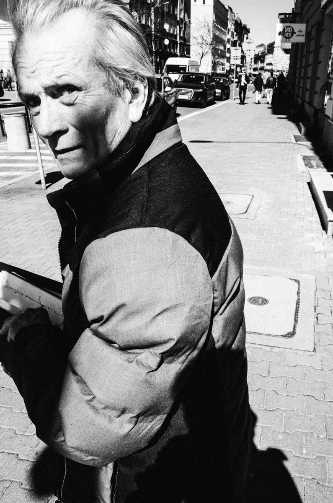
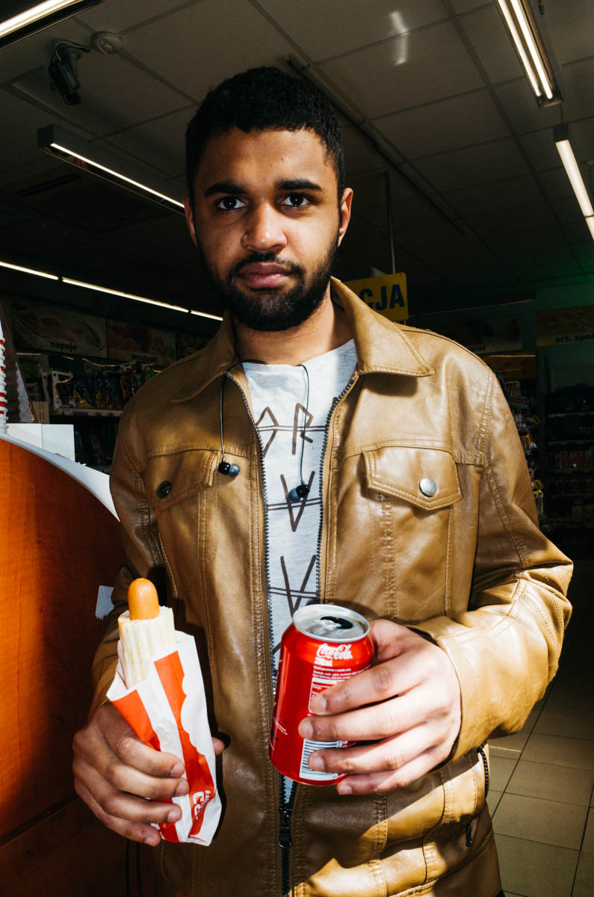
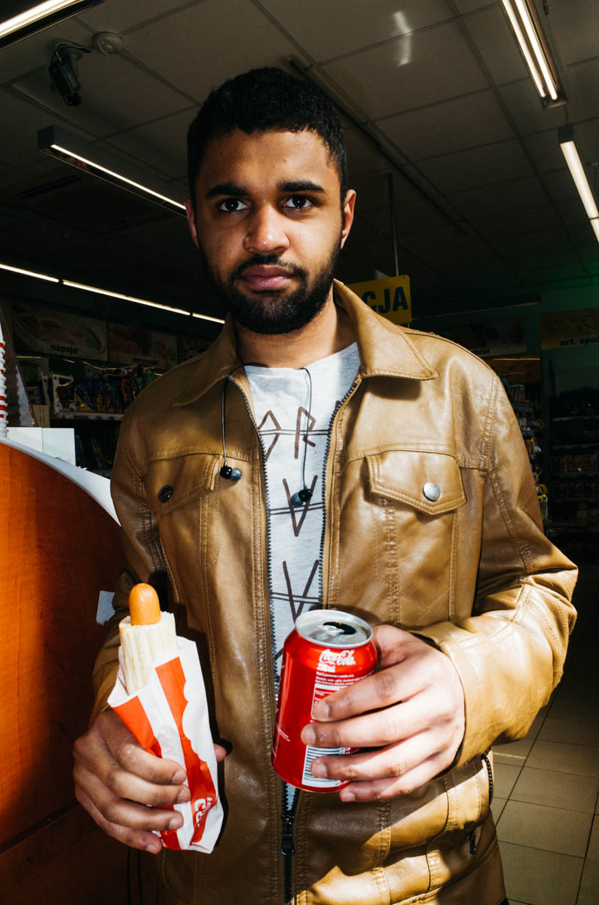
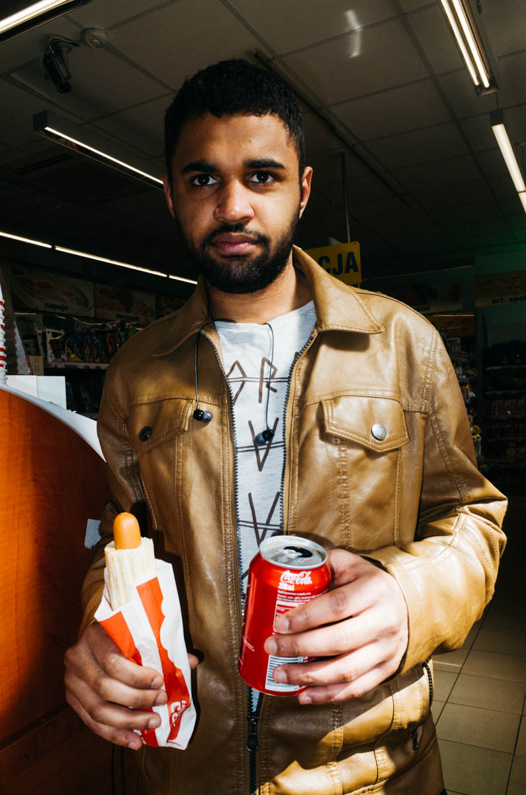

 


“If your photos aren’t good enough, then you’re not close enough” – Robert Capa
Portrait is the closest you can get to someone - portrait is trying to get in beetween of skin and shirt of photographed person. It's the most intimate way of photographing. If you do it on the street, your goal is to capture this miliseconds of relationship with stranger.